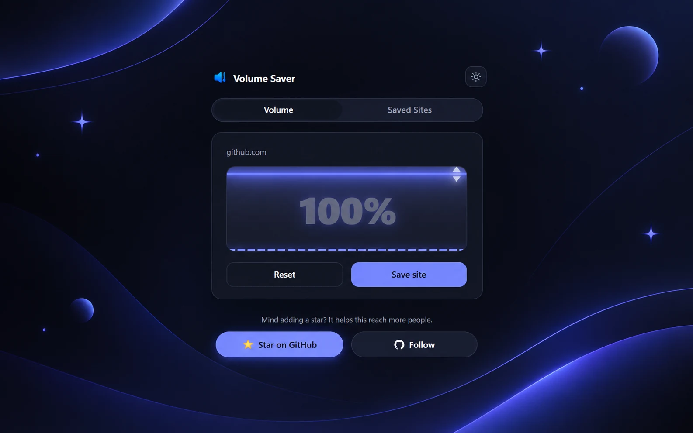

Simple Volume Saver: per-site volume control for Chrome
A volume knob that remembers every site.
Every site handles volume differently, and half of them fight you if you try to fix it from the OS mixer. Some clamp it, some remember nothing between visits, some route audio through a custom player that ignores the system slider entirely.
simple-volume-saver sits on top of that: pick a level per site, it remembers, and you can reset it without digging through five different players' settings. The core is a background service worker that injects a small function into the page, and a bit of chrome.storage, nothing that needed a framework. Saved levels are kept per site in chrome.storage.sync, so they follow you across signed-in devices, and a live audio-reactive visualizer, fed by chrome.tabCapture, shows the tab's real audio output rather than a decorative animation.
The popup

Applying the level
The popup is intentionally small: a slider, a site name, a reset button. Most of the actual work happens in the service worker: when a tab finishes loading or starts playing audio, it looks up the saved level for that site's origin and injects a function that applies it to every media element on the page.
// background.js (protocol checks and error handling left out)
function handleTabAudio(tabId, tab) {
const url = new URL(tab.url);
chrome.storage.sync.get(['siteList'], (data) => {
const volume = (data.siteList || {})[url.origin];
if (volume === undefined) return;
chrome.scripting.executeScript({
target: { tabId },
func: applyVolumeToPage,
args: [volume]
});
});
}
// injected into the page
function applyVolumeToPage(volumePercent) {
window.__svsVolume = volumePercent / 100;
const applyToAll = () => {
document.querySelectorAll('video, audio').forEach((media) => {
media.volume = window.__svsVolume;
});
};
applyToAll();
// ...then a MutationObserver re-applies it to media added later
}The function runs again on every navigation and every audio event, so it has to be idempotent. The first call sets a flag on the page and installs one MutationObserver and one capturing play listener. Later calls only update the stored level and apply it, so nothing stacks up no matter how often the worker fires. The capturing listener matters for players that create a fresh element right before playback: the level is set on the element as it starts, not one mutation later.
Levels are keyed by origin (https://example.com), not by hostname or full URL. A level saved on one video applies to every page of that site, and http and https stay separate, which is how the browser itself scopes site data. Pages the extension cannot script, such as chrome:// pages, are filtered out by protocol before anything is injected.
A visualizer that shows the real output
The obvious way to draw a level meter is to inject a MediaElementAudioSourceNode into the page and attach an analyser to the video element. That silently fails on YouTube, Spotify and any site that already runs its own Web Audio graph, because an element can only be claimed by one such node for its whole lifetime. So the popup taps the tab's final mixed output instead: chrome.tabCapture gives a stream id, getUserMedia opens it, and an AnalyserNode reads the frequency bins.
const source = ctx.createMediaStreamSource(stream);
const analyser = ctx.createAnalyser();
analyser.fftSize = 256;
source.connect(analyser);
// route the captured audio back out, or the tab goes silent while captured
source.connect(ctx.destination);Capturing a tab mutes it by default, so the stream is connected back to the speakers. The audio is analyzed in memory and played back; nothing is recorded or sent anywhere. The stream and the audio context are closed when the popup closes.
Permissions
| permission | why |
|---|---|
| storage | Saved levels and the theme |
| scripting, activeTab, <all_urls> | Reads and sets media volume, applies saved levels after navigation |
| tabs | Detects when a tab starts playing audio |
| tabCapture | Visualizer only |
The fader also works from the keyboard (arrow keys in steps of 5, Home and End), and the popup has dark and light themes that follow the system setting until one is picked.
Limits
Heavily customized players that keep their own volume state may not respond, or may reset the level on their own. The visualizer does not work on internal browser pages. Volume above 100% is not supported, because it breaks fullscreen video.
Why it stayed
Nothing fancy under the hood, but it's the kind of tool I actually reach for every day, which is more than I can say for most of what I've shipped.